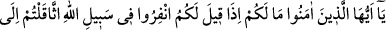
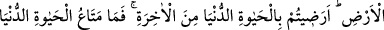
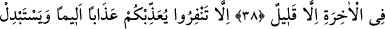
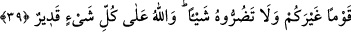

YERE ÇAKILIP KALANLAR
38. Ey inananlar, size ne oldu ki: “Allah yolunda topluca savaşa çıkın.” dendiği
zaman yere çakılıp kaldınız? Âhiretin yerine dünya hayatına mı râzı oldunuz? Ama
dünya hayatının geçimi, âhiretin yanında pek azdır.
39. Eğer topluca savaşa çıkmazsanız, (Allah) size acı veren (bir azapla) azab
eder ve yerinize sizden başka bir topluluk getirir. O’na hiçbir zarar veremezsiniz.
Allah her şeye kadirdir.
Bu âyette Tebük gazvesinin anlatımına başlanmaktadır. Tebük, Şam ile Medine
arasında bir yerdir. Bu gazveye “Gazvetü’l-usre (güçlük gazvesi)” de denir. Ayrıca
çoğu münafıkların durumlarını ortaya çıkarması sebebiyle “Fâdiha (rezil ve rüsvay
eden)” ismi de verilir.
Rivayet edildiğine göre Hz. Peygamber (a.s.), Mekke’yi feth edip Huneyn ve Evtâs’ta
Hevâzin ve Sakîf ile savaştıktan sonra Tâif’i muhasara etti ve burayı fethetti. Ardından
Ci‘râne’ye geçti. Burada ihrama girdikten sonra umresini yapıp Medine’ye döndü.
Medine’ye dönünce ashabına Şam taraflarında bulunan Rumlara karşı sefere çıkma
emrini verdi. Bu emir, hicretin 9. senesi Receb ayında verilmişti. Hz. Peygamber’e
(a.s.) Rumların Şam’da büyük bir ordu topladığı ve öncülerinin Belka diye bilinen yere
kadar geldikleri haberi ulaşmıştı.
Rumlara “Benü’l-asfar (Sarıoğulları) adı da verilmiştir. Çünkü onlar, Hz. İshak
(a.s.)’ın oğlu Iys ın oğlu Rûm’un neslinden gelmektedirler. Sarı olduğu için Rûm’a,
Asfar denilmiştir. Eskilerin haberlerine dayanan bazı âlimler, Iys’ın amcası İsmâil’in
(a.s.) kızı ile evlendiğini, bu evlilikten Rum’un dünyaya geldiğini, Rum sarı olduğu için
de ona “asfar (sarı)” denildiğini söylerler. Sarı olanın Rûm’un babası Iys olduğu da
söylenir.
Tebük seferine çıkma emri zor bir zamana rastgelmişti. Medine ve civarında kıtlık
vardı. Hava çok sıcak ve Medine meyvelerinin devşirme zamanıydı. Ayrıca sefer
yapılacak mesafe de hayli uzaktı. Bazı müslümanlara sefere çıkmak ağır geldi. Bunun
üzerine Allah Teâlâ bu âyeti indirdi ve şöyle buyurdu:
“Ey inananlar, size ne oldu ki” Allah’ın emriyle emreden Rasûlullah tarafından